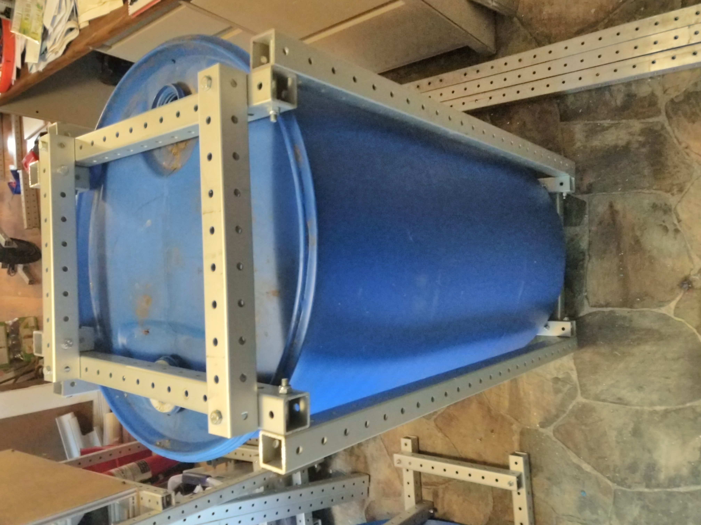
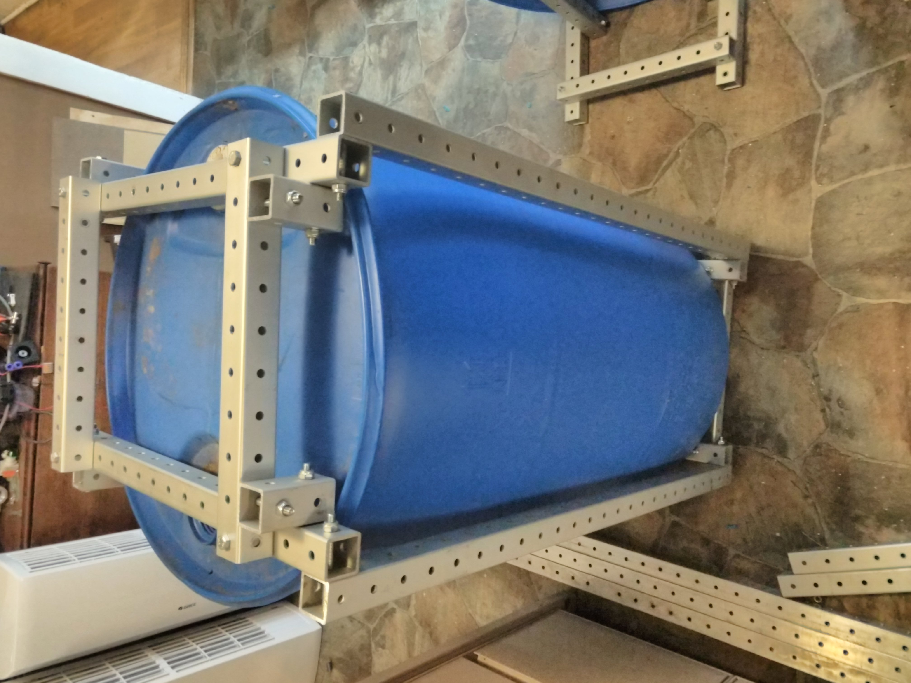
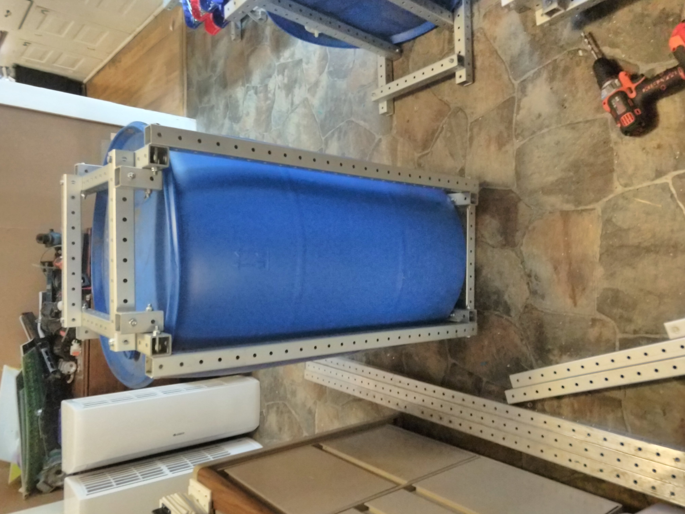

barrels revision 1156
Problem
Approach



Framing this standardized barrel was achieved with 2, 10, 15, and 25 hole frame sections by opting not to make tri-joints at every corner.
Tools
Parts
{| class="wikitable"
|-
! Quantity !! Part !! Link
|-
| 2 || 2 hole [[frame|frame]] ||
|-
| 4 || 10 hole [[frame|frame]] ||
|-
| 4 || 15 hole [[frame|frame]] ||
|-
| 4 || 25 hole [[frame|frame]] ||
|-
| 26 || 2 [[bolt|bolt]] ||
|-
| 26 || [[nut|nut]] ||
|-
| 1 || [[https://en.wikipedia.org/wiki/Drum_(container)|barrel]] ||
|}